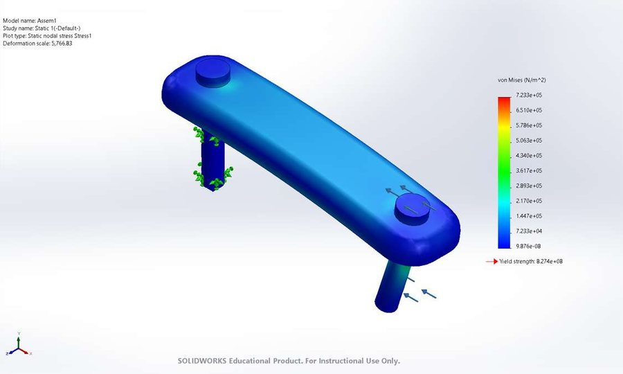
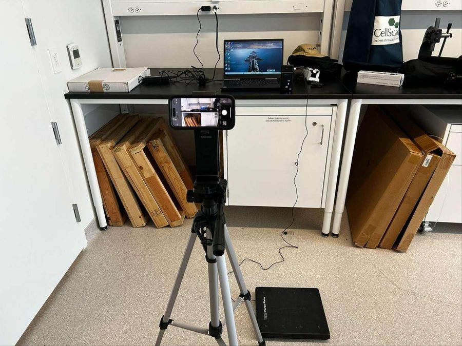
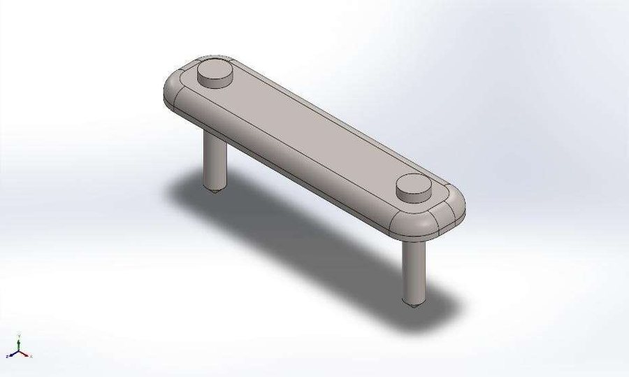

Device / Design & SimulationOct 2025
Orthopaedic Fracture Fixation Plate FEA
Group of 3 · BMEG 230 · My role: SolidWorks modelling, results, discussion
Measured a deep-squat jump landing on a force plate, modelled three plate designs in SolidWorks and ran static FEA. The Ti-6Al-4V design with two 5 mm holes had the lowest stress and displacement.
1536.6 N
Load per leg
0.7233 MPa
Lowest max von Mises
3
Designs compared